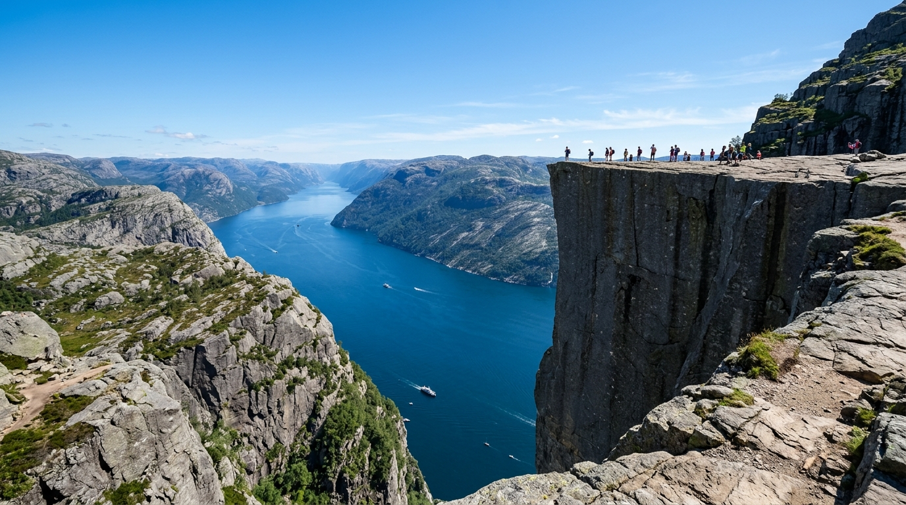

Landformene i Norge
Den gamle grunnfjellsoverflata i indre Finnmark og i Sørøst-Norge kan ha vært utsatt for ytre krefter i en milliard år – derfor varierer landskapet stort fra nord til sør og fra vest til øst.

Huskeregel: Forskjellen på selve steinen og formen på landskapet
Når geografer snakker om gamle og unge (nye) landformer, snakker vi om når formen ble laget – ikke hvor gammel steinen er! Tenk deg en gammel, slitt trebenk som er rund i kantene. Hvis du skjærer dype spor i den med et hoggjern, er benken gammel, men sporene er nye. Slik har elver og isbreer skåret unge, bratte daler og fjorder ned i Norges milliardgamle grunnfjell.
På dinosaurenes tid – i trias, jura og kritt – lå Norges vestkyst nær Grønland (bare 15 mil mellom dem mot slutten av krittperioden; Norskehavet eksisterte ikke). Varmt klima vekslende mellom tørre og fuktige perioder slipte overflata ned til et mykt, bølget landskap. Slike utgjør mesteparten av den norske landoverflata og har rolige linjer og moderate høydeforskjeller – for eksempel Finnmarksvidda, Hardangervidda (som strekker seg inn i Vinje og Tinn i Telemark), Østlandets skog- og fjellvidder, Sørlandsheiene, skjærgården (inkludert Bamble- og Kragerø-skjærgården) og lave åser i Østfold.
Unge (nye) landformer er dannet ved elveerosjon i paleogen og neogen og ved elve- og breerosjon i kvartær (siste 2,6 millioner år). Fjordene, de bratte fjellene og de dype dalene er erodert ned i det gamle landskapet som var der fra før. I Telemark ser vi denne kontrasten tydelig når vi går fra de flate, gamle viddene på Hardangervidda og ut til kanten av den dype, unge U-dalen Vestfjorddalen ved Rjukan, eller ser Jettegrytene i Nissedal, Jomfruland og Geiteryggen som ble formet under istiden.
Vestlandet og Nord-Norge – lange fjorder og korte daler
Hele vestkysten fra Rogaland til Finnmark er oppskåret av fjorder. Ute ved fjordmunningen er det vanligvis en grunnere – Sognefjorden er bare 150 meter dyp ved munningen, men hele 1300 meter på det dypeste lenger inn. Innerst danner elva gjerne et delta (for eksempel Lærdalsøyri i Sognefjorden) etterfulgt av en flat elveslette av smeltevannsløsmasser med veier, jordbruk og bebyggelse.
Ved overgangen mellom fjord og dal ligger det noen steder et , bygd opp i havet like utenfor brefronten da den sto stille under avsmeltingen. Dette kan demme opp en , som i Eidfjord eller Hornindalsvatnet i Nordfjord (514 meter dypt, Europas dypeste innsjø). Lenger inne stiger dalen til en bratt dalende med høyt fossefall.

Østlandet – fjordsjøer og lange daler
Østlandet har gjennomgått en langt mildere breerosjon enn Vestlandet og Nord-Norge, men har likevel langstrakte, iseroderte fjordsjøer som Mjøsa og Randsfjorden, og lange dalfører som Østerdalen og Gudbrandsdalen (for eksempel Fåvang på en vid elveslette). Hoveddalene har U-form, men det finnes også V-formede sidedaler som gikk på tvers av isbreenes bevegelsesretning og derfor ble lite forandret av iserosjon.
Viddelandskap, Sørlandsheiene og skjærgården
Viddelandskap
har små høydeforskjeller (Finnmarksvidda, Hardangervidda – Europas største fjellplatå). Noen steder har breer gravd tinder i fjellsidene mens toppflata er avrundet: gamle og unge landformer side om side.
Sørlandsheiene
Sør for Hardangervidda (Agder og Rogaland) blir landskapet et småkupert med dyrkbar jord og gårder i forsenkningene, og dypere daler som Setesdal og Sirdal.
Skjærgården
Fra Lindesnes og østover til Sverige (utenom Indre Oslofjord) går heilandskapet over i en uregelmessig med øyer, holmer, viker og sund – et gammelt, nedslitt landskap.
Strandflata

Langs kysten fra Rogaland til Vest-Finnmark finner vi : lavtliggende, flate eller småkuperte områder opptil 50 m over havet og ned til 50 m dyp. Ute på strandflata kan det stå igjen hattlignende restfjell på øyene, slik som Torghatten (slike restfjell finnes ikke i skjærgårdslandskapet). Bølgeerosjon i paleogen og neogen samt frostforvitring og iserosjon under istidene har formet strandflata, som derfor regnes som en ung landform.
Repetisjonsoppgaver
- Hva er en isbre?
- Hva er en istid, og når var siste istid slutt?
- Nevn noen ulike typer isbreer.
- På hvilke måter kan en isbre erodere?
- Hva er alpine landformer, og hvordan dannes en tind?
- Hva er grunnen til at iseroderte daler gjerne har et U-formet tverrsnitt?
- Hvilke landformer kan vi finne langs et lengdeprofil av en vestlandsfjord?
- Hvor finner vi de eldste landformene i Norge?
- Nevn noen landformer som hovedsakelig er dannet i eldre geologiske perioder.
Ordliste
Lisens: Alle fotografiske illustrasjoner og geologiske figurer i Images/ er egenproduserte for dette undervisningsopplegget under åpen lisens (CC0 1.0 / CC BY 4.0).